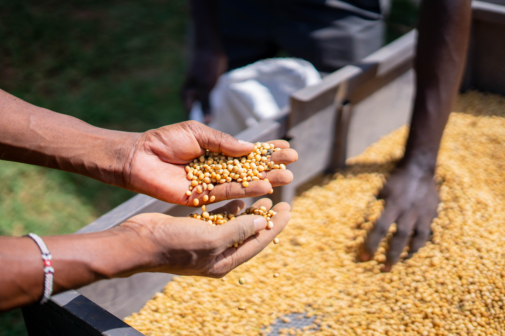
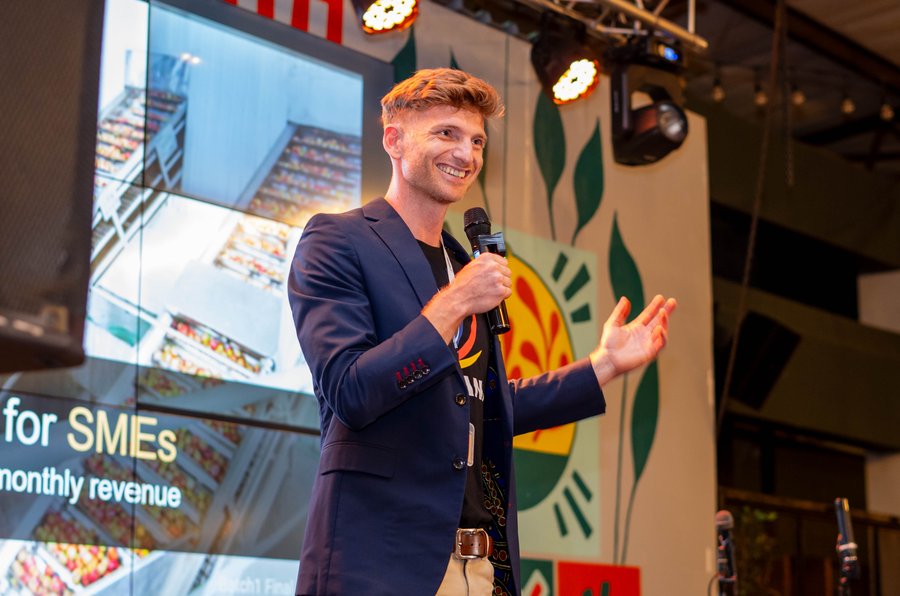
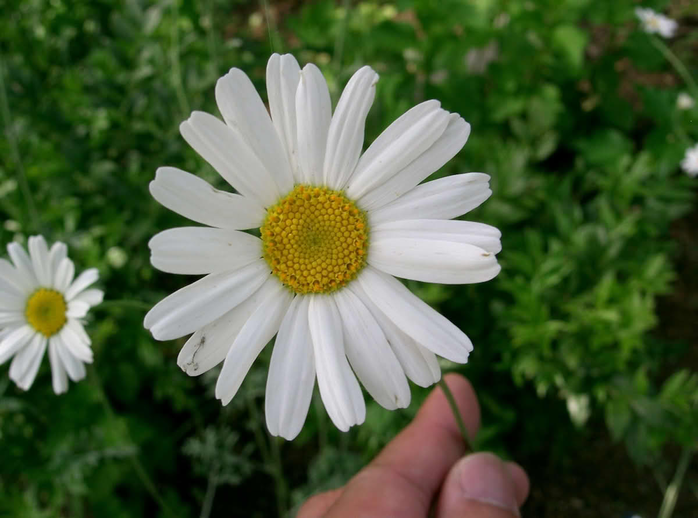
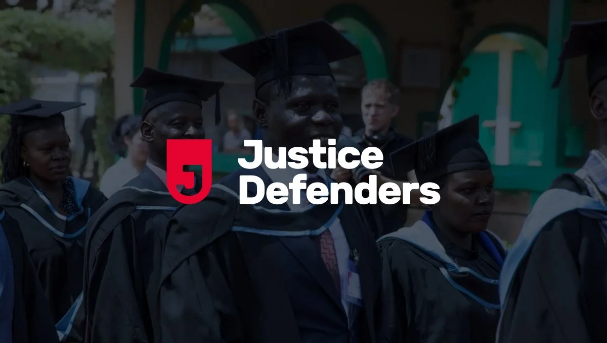
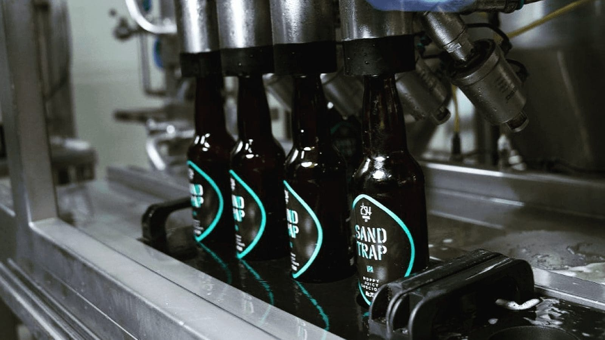
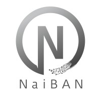
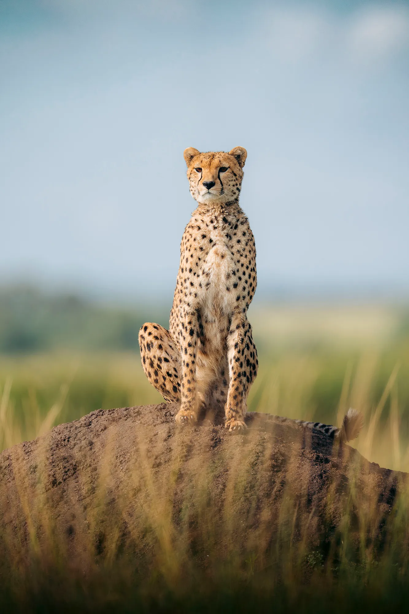
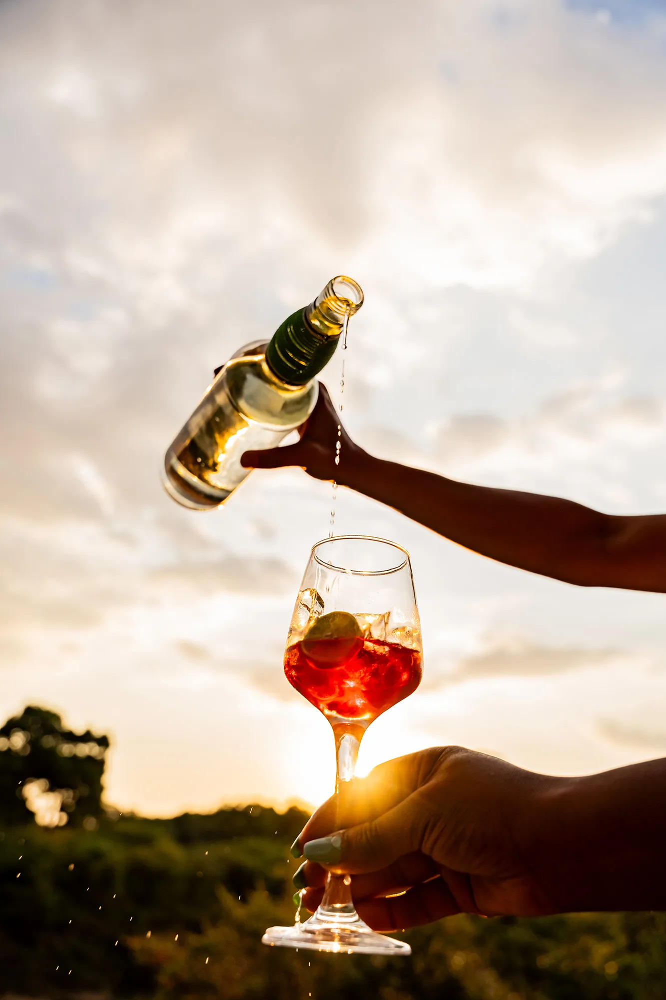
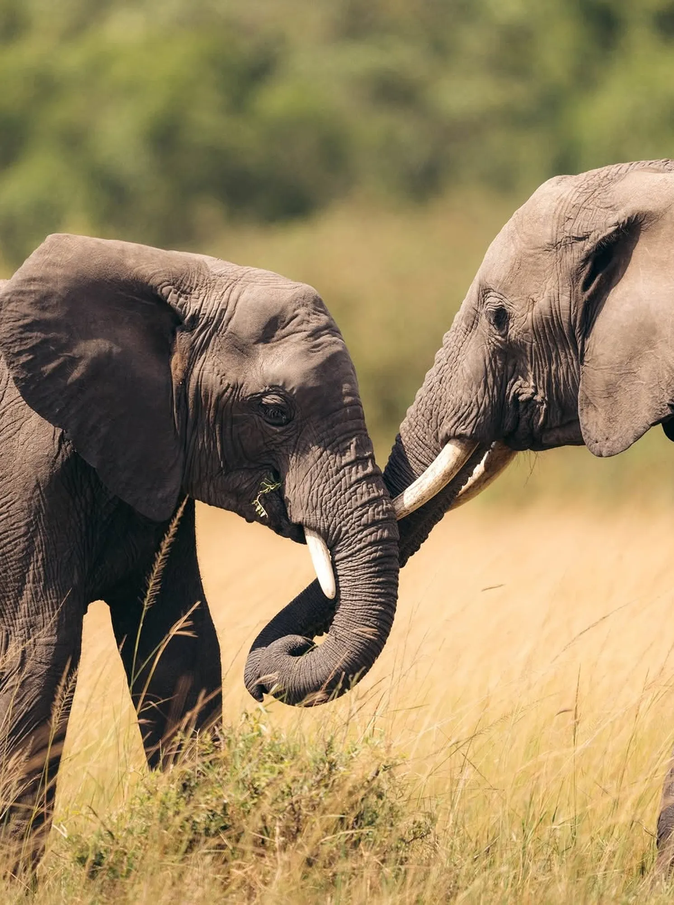

- Dates: April 7 – April 15, 2026
- Duration: 8 days
- Location: Nairobi · Rift Valley · Coastal supply chains
- Focus: Manufacturing · Agriculture · Logistics · Fintech · Retail
- Hosted by: Amo Rebecca · Kyle Schutter
Overview
Inspired by world-class impact journeys, Business Safari is a fast-paced field program to understand how real companies scale in Kenya. Meet operators on the factory floor, visit farms and logistics hubs, and sit with investors and founders building the next generation of African industry.
No panels. Minimal slides. Maximum reality.
Who Is This For?
- Investors and allocators exploring frontier-market opportunities
- CEOs, operators, and functional leads (finance, ops, growth)
- Founders building in or expanding to East Africa
- Family offices and HNWI networks
- Partners and ecosystem leaders (e.g., accelerators, universities)
Itinerary

Day 0 — Guest Keynote
Guest talk by Peter Nduati, Founder of Resolution Health Insurance; exited to private equity.

Day 1 — Kuzana Final Pitch (Batch 3)
Attend the Kuzana Final presentations. Our portfolio companies have averaged 174% year‑on‑year growth; now at 17 investees and counting.

Day 2 — Nairobi Company Visits
Visit three high‑growth companies. Share your expertise as a business leader with entrepreneurs eager to learn and scale. Guest talk by Dave Payne, co‑founder of Kentegra, Africa’s largest pyrethrum producer (world‑class organic insecticide).

Day 3 — Justice Defenders: Inside Kenya’s Prisons
Field visit with Justice Defenders, where incarcerated people are trained as paralegals to represent themselves—often overturning wrongful convictions. A consistent highlight.

Day 4 — More Operators, More Insight
Meet three additional companies, including 254 Brewing Co. Walk the floor, decode unit economics, and discuss go‑to‑market and scale‑up roadmaps.

Day 5 — Angel Capital in Action
See two companies pitch to NaiBAN, one of Africa’s leading angel networks. Engage with operators, angels, and co‑investors.

Day 6 — To the Maasai Mara
Fly to the Maasai Mara. Hosted by Emboo River, co‑founded by Loïc Amado (ex‑Uber Africa, launched 4 markets).

Day 7 — Game Drive & Reflection
Explore the Mara’s resurgence after the rains—abundant birdlife and the Big Five (lions, leopards, elephants, rhino, buffalo). Contextualize learnings with the cohort.

Day 8 — Return
Fly back to Nairobi and depart internationally, or extend your stay on Kenya’s coast.
Hosted by

Behavioral Scientist, LSE graduate, trip leader

Founder at Kuzana.co; previously raised $20m in Africa
Guests

Co‑founder, Kentegra

Angel investor and cofounder of NaiBAN

Serial entrepreneur and investor; founded Resolution Health (exited to PE); music producer
Trip Cost
Program fee: $7,500. Includes in-country logistics, safari, meals, hotel. International flights, souveniers and visa not included.
Register Your Interest
Email us a short note on who you are and why you’d like to join. We curate small, high-caliber cohorts.